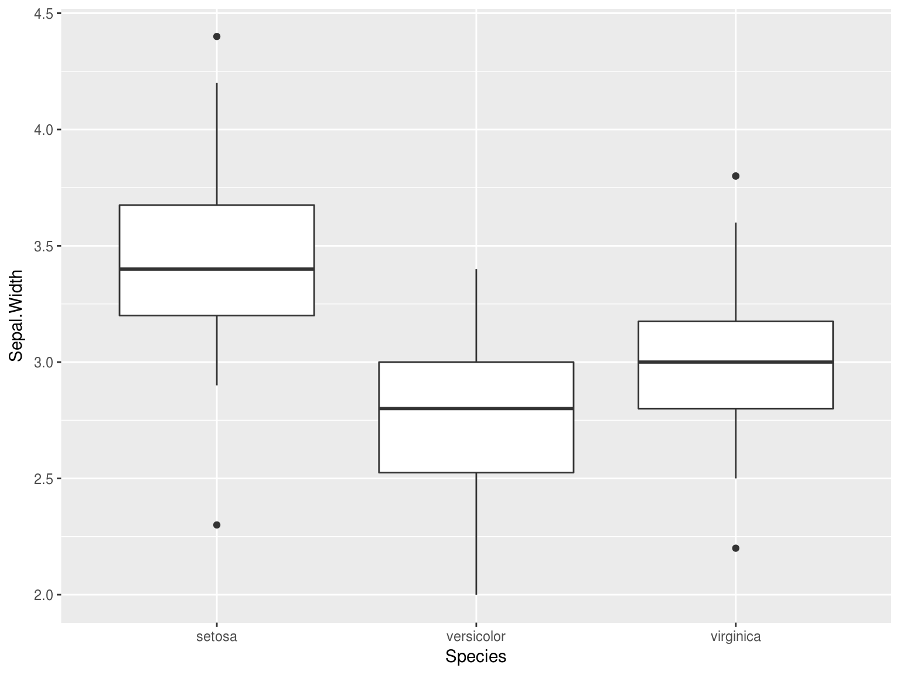
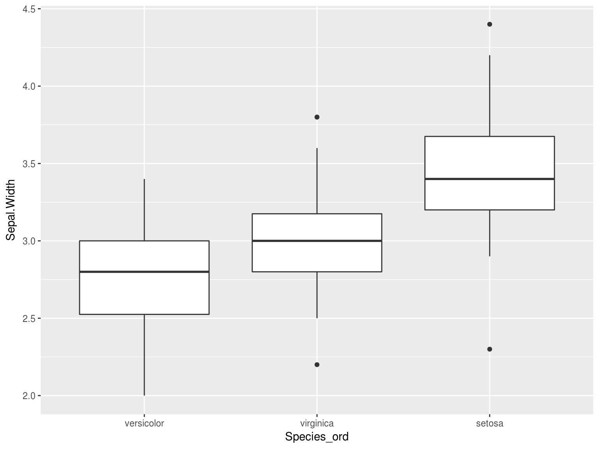

Clase 2 Temas selectos de R
El lenguaje de programación R ha surgido como un avance en el desarrollo de software para análisis estadítico. Hace unos años era común el uso de productos de software proprietario, tales como GAUSS, RATS, EVIEWS, SPSS, SAS, Matlab, Minitab, Stata y software que en principio ni siquiera es apropiado para el análisis de datos, como Microsoft Excel. Estos programas generalmente son demasiado costosos y tienen un rendimiento bajo. Si es necesario hacer un análisis más complejo, entonces los archivos se vuelven demasiado grandes y el todo el proceso se vuelve infactible.
2.1 ¿Qué ventajas tiene R?
R es la herramienta más sobresaliente para la estadística, el análisis de datos y el aprendizaje estadístico. Es más que un paquete estadístico; es un lenguaje de programación, por lo que puede crear sus propios objetos, funciones y paquetes.
Hablando de paquetes, hay más de 12,000 innovadores paquetes aportados por los usuarios, y que están disponibles en CRAN (The Comprehensive R Archive Network), eso sin mencionar Bioconductor. Para tener una idea de qué paquetes hay disponibles, puedes leer posts en R-bloggers y ver el . Muchos paquetes son enviados por miembros prominentes de sus respectivos campos.
Al igual que todos los programas, los programas de R documentan explícitamente los pasos de su análisis y esto facilita la reproducibilidad del análisis estadístico. Además, provee de herramientas para probar rápidamente muchas ideas y corregir fácilmente los problemas que puedan surgir.
R puedes usarlo fácilmente en cualquier lugar. Es independiente de la plataforma, por lo que puede usarlo en cualquier sistema operativo. Y es gratis, por lo que puede usarlo en cualquier empleador sin tener que persuadir a su jefe para comprar una licencia.
2.1.1 R es gratuito y de código abierto
R está disponible bajo una licencia de código abierto, lo que significa que cualquiera puede descargar y modificar el código. Esta libertad a menudo se conoce como la de software libre (“free as in speech”). R también está disponible de manera gratuita (“free as in beer”). En términos prácticos, esto significa que podemos descargar y usar R gratis.
Otro beneficio, aunque un poco más indirecto, es que cualquiera puede acceder al código fuente, modificarlo y mejorarlo. Como resultado, muchos programadores excelentes han contribuido con mejoras y correcciones al código de R. Por esta razón, R es muy estable y confiable.
Cualquier libertad también tiene asociadas ciertas obligaciones. En el caso de R, estas obligaciones se describen en las condiciones de la licencia bajo la cual se publica: Licencia Pública General de GNU (GPL), Versión 2. Estas obligaciones te pertienen si solamente haces uso de R. Sin embargo, si haces cambios en su código fuente R y lo redistribuyes, entonces estos cambios se deben poner a disposición de todos los usuarios.
2.1.2 R tiene una comunidad comprometida
Muchas personas que usan R eventualmente comienzan a ayudar a los nuevos usuarios y proponen el uso de R en sus lugares de trabajo y círculos profesionales. Por ejemplo, si tienes dudas sobre algún aspecto de R, podrás encontrar ayuda en Stack Overflow. R-Ladies CDMX es parte de R-Ladies Global, una organización mundial que busca generar una comunidad fuerte para compartir dudas, habilidades y apoyo sobre #RStats en una comunidad con perspectiva de género.
2.2 Flujo básico de trabajo para el análisis de datos en R.
En el análisis de datos nos interesan técnicas cuantitativas cómo: recolectar, organizar, entender, interpretar y extraer información de colecciones de datos predominantemente numéricos. Estas tareas se resumen en el proceso de análisis del siguiente diagrama:

Primero debe importar los datos en R. Esto generalmente significa llevar los datos almacenados en un archivo, una base de datos, o uan Web API, a un data frame de R.
Limpiar y transformar los datos es necesario, para que la forma en que se almacenan los datos coincida con la semántica de los datos. En términos generales, cada columna debe ser una variable y cada rengón una observación.
La visualización es una actividad fundamentalmente humana. Una buena visualización te puede mostrar cosas que no esperabas y puede ayudarte a plantear nuevas preguntas acerca de los datos. Una buena visualización también puede ayudar a determinar si se está haciendo una pregunta equivocada sobre los datos, o si es encesario recolectar más datos, o bien, obtener datos de fuentes distintas. Las visualizaciones pueden sorprenderte, pero requieren de un ser humano para interpretarlas.
Por otro lado, los modelos son una herramienta para complementar las visualizaciones. Los modelos los utilizamos como un instrumento matemático y computacional para responder preguntas precisas acerca de los datos.
Por último, la comunicación de los resultados es una parte absolutamente crítica para cualquier proyecto de análisis de datos.
2.3 Introducción a R como lenguaje de programación, y la plataforma interactiva de RStudio.
Notas basadas en el material de Teresa Ortiz y Sonia Mendizábal y en el libro “R for Data Science” escrito por Hadley Wickham y Garret Grolemund (Wickham and Grolemund 2016).
Hay cuatro cosas que necesitan para ejecutar el código en este taller: R, RStudio, una colección de paquetes de R, llamada tidyverse, y otros paquetes que vamos a ir instalando progresivamente. Los paquetes son la unidad fundamental del código reproducible en R. Incluyen funciones que se pueden utilizar en un ámbito general, su documentación que describe cómo usarlas y datos de ejemplo con código de ejemplo como ayuda para los usuarios.
2.3.1 ¿Cómo entender R?
Hay una sesión de R corriendo. La consola de R es la interfaz entre R y nosotros.
En la sesión hay objetos. Todo en R es un objeto: vectores, tablas, funciones, etc.
Operamos aplicando funciones a los objetos y creando nuevos objetos.
2.3.2 ¿Por qué R?
R funciona en casi todas las plataformas (Mac, Windows, Linux e incluso en Playstation 3).
R promueve la investigación reproducible.
R está actualizado gracias a que tiene una activa comunidad.
R se puede combinar con otras herramientas. R permite integrar otros lenguajes (C/C++, Java, Julia, Python) y puede interactuar con muchas fuentes de datos: bases de datos compatibles con ODBC y paquetes estadísticos.
2.3.2.1 Descargar R: versión 3.4.3
Sigue las instrucciones del instalador:
2.3.2.2 Descargar RStudio: versión 1.1.414
RStudio es libre y gratis. Es un ambiente de desarrollo integrado para R: incluye una consola, un editor de texto y un conjunto de herramientas para administrar el espacio de trabajo cuando se utiliza R.

Algunos shortcuts útiles en RStudio son:
En el editor
- command/ctrl + enter: enviar código a la consola
- ctrl + 2: mover el cursor a la consola
En la consola
- flecha hacia arriba: recuperar comandos pasados
- ctrl + flecha hacia arriba: búsqueda en los comandos
- ctrl + 1: mover el cursor al editor
Más
- alt + shift + k: muestra los shortcuts disponibles.
Para que el código sea reproducible es importante que RStudio únicamente guarde lo relevante para hacer los cálculos, es decir, los scripts y no los cálculos en sí. Con tus scripts de R (y los datos), siempre podemos volver a crear las variables de ambiente. Sin embargo, es casi imposible recuperar un script únicamente a partir de tus variables de ambiente. Por lo tanto, se recomienda ampliamente configurar RStudio para que jamás guarde el ambiente en memoria.

2.3.2.3 Paquetes de R
Una de las ventajas de R es la gran comunidad que aporta al desarrollo por medio de paquetes que dan funcionalidad adicional. Esta es la mejor manera de usar R para análisis de datos.
Existen dos formas de instalar paquetes:
- Desde RStudio:

- Desde la consola:
install.packages('tidyverse')Una vez instalados los paquetes, se cargan a la sesión de R mediante library. Por ejemplo, para cargar el paquete readr que instalamos anteriormente, hacemos:
library('tidyverse')
print(read_csv)## function (file, col_names = TRUE, col_types = NULL, locale = default_locale(),
## na = c("", "NA"), quoted_na = TRUE, quote = "\"", comment = "",
## trim_ws = TRUE, skip = 0, n_max = Inf, guess_max = min(1000,
## n_max), progress = show_progress())
## {
## tokenizer <- tokenizer_csv(na = na, quoted_na = TRUE, quote = quote,
## comment = comment, trim_ws = trim_ws)
## read_delimited(file, tokenizer, col_names = col_names, col_types = col_types,
## locale = locale, skip = skip, comment = comment, n_max = n_max,
## guess_max = guess_max, progress = progress)
## }
## <environment: namespace:readr>Como el paquete readr está cargado en la sesión podemos llamar a la función read_csv que se usará más adelante.
Importante: Los paquetes se instalan una vez únicamente después de descargar una nueva versión de R. Las librerías se cargan en cada sesión de R nueva.
2.3.2.4 Ayuda en R
Existen diferentes formas de pedir ayuda en R.
help.start(): ayuda en generalhelp(fun)o?fun: ayuda sobre la función funapropos("fun"): lista de funciones que contiene la palabra funexample(fun): muestra un ejemplo de la función fun
help(read_csv)
?read_csv22.4 Estructuras de datos
En R se puede trabajar con distintas estructuras de datos, algunas son de una sola dimensión y otras permiten más, como indica el siguiente diagrama:

2.4.1 Vectores
Los vectores son estructuras de datos de una dimensión. Un vector se define con la función c(), que concatena diferentes elementos del mismo tipo, esto determina el tipo del vector.
Nota: En R, la asignación de un nombre al vector, o en general a cualquier objeto, se realiza con el símbolo <-. Se recomienda usar el shortcut alt - genera <-.
Los vectores en R pueden ser de diferentes tipos o clases, a continuación se presentan algunos casos. En R, la clase de cada vector se extrae con la función class()
- Vectores numéricos:
a <- c(1,2.5,3,4.5,5,6.9)
a## [1] 1.0 2.5 3.0 4.5 5.0 6.9# clase del vector
class(a)## [1] "numeric"- Vectores lógicos:
bool <- c(T, F, TRUE, FALSE)
bool## [1] TRUE FALSE TRUE FALSE# clase del vector
class(bool)## [1] "logical"- Vectores de caracteres:
fruits <- c("apple", "banana", "orange", "pineapple", "lemon", "kiwi")
fruits## [1] "apple" "banana" "orange" "pineapple" "lemon" "kiwi"class(fruits)## [1] "character"Para la manipulación de caracteres es recomendable el paquete stringr que permite realizar operaciones sobre este tipo de elementos. Más adelante se presenta un ejemplo.
La selección de elementos de un vector se realiza con [ ] para indicar la posición. A diferencia de otros lenguajes de programación las posiciones en R incian en 1.
# elemento en la posición 1
fruits[1]## [1] "apple"# elemento en la posición 1 y 5
fruits[c(1,5)]## [1] "apple" "lemon"En R es posible extraer un valor del vector indexándolo con posiciones negativas:
# omitir el elemento en la primera posición
fruits[-1]## [1] "banana" "orange" "pineapple" "lemon" "kiwi"Una característica particular de vectores en R, es que cada elemento puede ser nombrado. Para hacer esto se usa la función names(). Por ejemplo, al vector fruits agregemos el nombre en español de la fruta para como el nombre de cada elemento.
names(fruits) <- c('manzana', 'platano', 'naranja', 'piña', 'limón', 'kiwi')
fruits## manzana platano naranja piña limón kiwi
## "apple" "banana" "orange" "pineapple" "lemon" "kiwi"# cada elemento tiene un nombre asignado
fruits[5]## limón
## "lemon"Para eliminar los nombres asignados a cada elemento, se asigna NULL a los nombres del vector:
## NULL## [1] "apple" "banana" "orange" "pineapple" "lemon" "kiwi"Los tipos que pueden tener los vectores se muestran en la siguiente figura.

Veamos que regresan los siguientes comandos:
typeof(TRUE)
typeof(1L)
typeof(1.5)
typeof("a")Cada vector tiene 3 propiedades:
x <- 1:5- Tipo
typeof(x)## [1] "integer"- Longitud
length(x)## [1] 5- Atributos
attributes(x)## NULLExiste la función is.vector(x) para determinar si un objeto es un vector:
is.vector(1:3)## [1] TRUE
¿Qué regresa ìs.vector(factor(1:3))?
TRUE
FALSE
NA
Ninguna de las anteriores
Ejemplo
Del vector de seis frutas diferentes llamado fruits, localiza únicamente las frutas que tengan la letra w.
# Cargamos la librería
library(stringr)
fruits <- c("apple", "banana", "orange", "pineapple", "lemon", "kiwi")
fruits## [1] "apple" "banana" "orange" "pineapple" "lemon" "kiwi"Esto es posible con la función str_detect(), que regresa un vector booleano para cada elemento del vector donde encontró el patron w.
str_detect(fruits, pattern = 'w')## [1] FALSE FALSE FALSE FALSE FALSE TRUEAhora, seleccionamos únicamente los elementos del vector que tienen la letra w:
# Selecciona el elemento con valor TRUE: kiwi
fruits[str_detect(fruits, pattern = 'w')]## [1] "kiwi"2.4.1.1 Operaciones de vectores
En R las operaciones de vectores son componente a componente.
- Sumas, multiplicaciones y potencias:
# Suma del vector longitud 6 y un vector longitud 1
a <- c(1, 2.5, 3, 4.5, 5, 6.9)
b <- 1
a + b ## [1] 2.0 3.5 4.0 5.5 6.0 7.9# Multiplicaciones componente a componente misma longitud
a <- c(1, 2.5, 3, 4.5, 5, 6.9)
a*a## [1] 1.00 6.25 9.00 20.25 25.00 47.61# Multiplicaciones y potencias
a <- c(1, 2.5, 3, 4.5, 5, 6.9)
c <- (a^2 + 5)*3
c## [1] 18.00 33.75 42.00 75.75 90.00 157.83- Comparaciones: En este tipo de operación se obtiene un vector lógico dependiendo si la condición se cumple o no.
# Comparar el vector dado un valor específico
a > 3 ## [1] FALSE FALSE FALSE TRUE TRUE TRUEa[a > 3] # únicamente elementos que cumple la condicion de ser mayores a 3## [1] 4.5 5.0 6.9fruits != 'apple'## [1] FALSE TRUE TRUE TRUE TRUE TRUEfruits[fruits != 'apple'] # únicamente elementos que no son apple## [1] "banana" "orange" "pineapple" "lemon" "kiwi"# Comparar el vector dado otro vector de la misma dimensión
x <- c(1, 2, 3, 4, 5, 6)
a == x## [1] TRUE FALSE TRUE FALSE TRUE FALSEa[a == x] # unicamente los elementos iguales y en la misma posición entre a y x## [1] 1 3 5- Funciones predeterminadas:
Algunas funciones predeterminadas del paquete básico de R son muy útiles para la manipulación de vectores y el análisis de datos. A continuación se enlistan algunasde las más comúnes:
length: número de elementos en el vectorclass: clase del vectorsummary: resumen de información del vectorunique: valores unicos del vectortable: tabla de frecuencias para cada elemento del vectorsum: suma de los elementos del vectormean: promedio de elementos del vectorsd: desviación estándar de los elementos del vectorcumsum: suma acumulada de elemento anterior del vector
 Aplica las funciones comúnes enlistadas antes en el vector
Aplica las funciones comúnes enlistadas antes en el vector x <- c(1, 2, 3, 4, 5, 6)
2.4.1.2 Otros tipos de vectores:
Existen tipos de vectores con características importantes:
- Secuencias: los vectores de secuencias se pueden crear con la función
seq()o con:, de la siguiente forma:
# secuecia de 1 al 10
1:10## [1] 1 2 3 4 5 6 7 8 9 10# secuecia de pares de 0 al 10
seq(0, 10, by = 2)## [1] 0 2 4 6 8 10- Vectores de fechas: se pueden hacer operaciones y algunas funciones definidas de fechas. El paquete lubridate permite manejar fechas con mayor facilidad.
Se incia la secuencia el 08 de agosto de 2016 y se asigna la clase de fecha con la función as.Date(). Se generan en total 10 fechas length.out = 10 y con una distancua semanal by="1 week", es decir, se tiene la fecha de 10 semanas consecutivas:
library(lubridate)
tenweeks <- seq( as.Date("2016-08-08"), length.out = 10, by="1 week")
tenweeks## [1] "2016-08-08" "2016-08-15" "2016-08-22" "2016-08-29" "2016-09-05"
## [6] "2016-09-12" "2016-09-19" "2016-09-26" "2016-10-03" "2016-10-10"class(tenweeks)## [1] "Date"Se pueden hacer algunas operaciones como se ejemplifica en el siguiente código.
# Aumenta un día a cada fecha
tenweeks + 1## [1] "2016-08-09" "2016-08-16" "2016-08-23" "2016-08-30" "2016-09-06"
## [6] "2016-09-13" "2016-09-20" "2016-09-27" "2016-10-04" "2016-10-11"# Aumenta un día a cada fecha
tenweeks ## [1] "2016-08-08" "2016-08-15" "2016-08-22" "2016-08-29" "2016-09-05"
## [6] "2016-09-12" "2016-09-19" "2016-09-26" "2016-10-03" "2016-10-10"weekdays(tenweeks) # Día de la semana de cada fecha## [1] "Monday" "Monday" "Monday" "Monday" "Monday" "Monday" "Monday"
## [8] "Monday" "Monday" "Monday"- Vectores de factores: este tipo de vector es usado comúnmente para variables categóricas. En R existe la clase factor que se asigna con la función homónima
factor()oas.factor().
Un vector de factores tiene dos elementos importantes, levels o niveles y labels o etiquetas. Los niveles determinan las categorías únicas del vector y pueden ser etiquetadas, como se muestra en le siguiente código para un vector de frutas.
En este ejemplo se tienen valores de frutas repetidos, se asigna un orden de niveles específicos y etiquetas específicas para cada nivel.
fruits <- c("banana", "apple", "banana", "orange", "pineapple", "lemon", "kiwi", "apple")
# Vector de caracteres a vector de factores
fruits.fac <- factor(fruits,
levels = c("apple", "banana", "orange", "pineapple", "lemon", "kiwi"),
labels = c('manzana', 'platano', 'naranja', 'piña', 'limón', 'kiwi')
)
fruits.fac## [1] platano manzana platano naranja piña limón kiwi manzana
## Levels: manzana platano naranja piña limón kiwi# Clase
class(fruits.fac)## [1] "factor"# Niveles etiquetados
levels(fruits.fac)## [1] "manzana" "platano" "naranja" "piña" "limón" "kiwi"# Niveles únicos
as.numeric(fruits.fac)## [1] 2 1 2 3 4 5 6 1# Agregar un nuevo valor
fruits.fac[7] <- 'melon'## Warning in `[<-.factor`(`*tmp*`, 7, value = "melon"): invalid factor level,
## NA generatedfruits.fac## [1] platano manzana platano naranja piña limón <NA> manzana
## Levels: manzana platano naranja piña limón kiwiImportante: En R los vectores no pueden combinar diferentes tipos de elementos. El tipo de elementos es lo que define la clase del vector. Es por esto que en el ejemplo, al sustituir la posición 7 por melon se obtiene un NA, melón no está incluído en los niveles definidos del vector.
Existen también los factores ordenados. Por ejemplo, consideremos los datos de flores de iris de Fisher:
library(forcats)
iris %>% sample_n(10) %>% knitr::kable()| Sepal.Length | Sepal.Width | Petal.Length | Petal.Width | Species | |
|---|---|---|---|---|---|
| 145 | 6.7 | 3.3 | 5.7 | 2.5 | virginica |
| 62 | 5.9 | 3.0 | 4.2 | 1.5 | versicolor |
| 40 | 5.1 | 3.4 | 1.5 | 0.2 | setosa |
| 26 | 5.0 | 3.0 | 1.6 | 0.2 | setosa |
| 75 | 6.4 | 2.9 | 4.3 | 1.3 | versicolor |
| 96 | 5.7 | 3.0 | 4.2 | 1.2 | versicolor |
| 35 | 4.9 | 3.1 | 1.5 | 0.2 | setosa |
| 131 | 7.4 | 2.8 | 6.1 | 1.9 | virginica |
| 69 | 6.2 | 2.2 | 4.5 | 1.5 | versicolor |
| 12 | 4.8 | 3.4 | 1.6 | 0.2 | setosa |
Este conjunto de datos multivariados fue presentado por el estadístico y biólogo británico Ronald Fisher en su artículo de 1936 “El uso de mediciones múltiples en problemas taxonómicos como un ejemplo de análisis discriminante lineal”. Edgar Anderson recopiló los datos para cuantificar la variación morfológica de las flores de iris de tres especies relacionadas. Los datos fueron recolectadas en la Península de Gaspé. (Fisher 1936)

El conjunto de datos consiste de 50 observaciones de cada una de las tres especies de Iris (Iris setosa, Iris virginica e Iris versicolor). Se midieron cuatro características de cada muestra: la longitud y el ancho de los sépalos y pétalos, en centímetros. Con base en la combinación de estas cuatro características, Fisher desarrolló un modelo discriminante lineal para distinguir las especies entre sí.
Supongamos que queremos analizar la distribución del ancho del sépalo por especie de flor de iris:

Esto ocurre porque los factores están ordenados alfabéticamente:
levels(iris$Species)## [1] "setosa" "versicolor" "virginica"Sería mejor que las especies estuvieran ordenadas por la mediana de la distribución para poder hacer mejores comparaciones. Notemos el uso de la función fct_reorder del paquete forcats.
library(forcats)
iris$Species_ord <- fct_reorder(iris$Species, iris$Sepal.Width, fun = median)
levels(iris$Species_ord)## [1] "versicolor" "virginica" "setosa"
2.4.2 Data Frames
Un data.frame es un conjunto de vectores del mismo tamaño agrupado en una tabla. Son estructuras rectangulares donde cada columna tiene elementos de la misma clase, pero columnas distintas pueden tener diferentes clases.
Por ejemplo:
tabla <- data.frame(
n = 1:6,
frutas = fruits[1:6],
valor = c(1, 2.5, 3, 4.5, 5, 6.9)
)
tabla## n frutas valor
## 1 1 banana 1.0
## 2 2 apple 2.5
## 3 3 banana 3.0
## 4 4 orange 4.5
## 5 5 pineapple 5.0
## 6 6 lemon 6.9Similar a las funciones de vectores, en data.frames existen funciones predeterminadas que ayudan a su manipulación.
headpermite ver los primeros 6 elemento del data.frame:
head(mtcars)## mpg cyl disp hp drat wt qsec vs am gear carb
## Mazda RX4 21.0 6 160 110 3.90 2.620 16.46 0 1 4 4
## Mazda RX4 Wag 21.0 6 160 110 3.90 2.875 17.02 0 1 4 4
## Datsun 710 22.8 4 108 93 3.85 2.320 18.61 1 1 4 1
## Hornet 4 Drive 21.4 6 258 110 3.08 3.215 19.44 1 0 3 1
## Hornet Sportabout 18.7 8 360 175 3.15 3.440 17.02 0 0 3 2
## Valiant 18.1 6 225 105 2.76 3.460 20.22 1 0 3 1strdescribe el tipo de variables en el data.frame:
str(mtcars)## 'data.frame': 32 obs. of 11 variables:
## $ mpg : num 21 21 22.8 21.4 18.7 18.1 14.3 24.4 22.8 19.2 ...
## $ cyl : num 6 6 4 6 8 6 8 4 4 6 ...
## $ disp: num 160 160 108 258 360 ...
## $ hp : num 110 110 93 110 175 105 245 62 95 123 ...
## $ drat: num 3.9 3.9 3.85 3.08 3.15 2.76 3.21 3.69 3.92 3.92 ...
## $ wt : num 2.62 2.88 2.32 3.21 3.44 ...
## $ qsec: num 16.5 17 18.6 19.4 17 ...
## $ vs : num 0 0 1 1 0 1 0 1 1 1 ...
## $ am : num 1 1 1 0 0 0 0 0 0 0 ...
## $ gear: num 4 4 4 3 3 3 3 4 4 4 ...
## $ carb: num 4 4 1 1 2 1 4 2 2 4 ...dimmuestra la dimensión (renglones, columnas) del data.frame:
dim(mtcars)## [1] 32 11colnamesynamesmuestran los nombres de las columnas del data.frame:
names(mtcars)## [1] "mpg" "cyl" "disp" "hp" "drat" "wt" "qsec" "vs" "am" "gear"
## [11] "carb"rownamesmuestra el nombre de los renglones del data.frame:
rownames(mtcars)## [1] "Mazda RX4" "Mazda RX4 Wag" "Datsun 710"
## [4] "Hornet 4 Drive" "Hornet Sportabout" "Valiant"
## [7] "Duster 360" "Merc 240D" "Merc 230"
## [10] "Merc 280" "Merc 280C" "Merc 450SE"
## [13] "Merc 450SL" "Merc 450SLC" "Cadillac Fleetwood"
## [16] "Lincoln Continental" "Chrysler Imperial" "Fiat 128"
## [19] "Honda Civic" "Toyota Corolla" "Toyota Corona"
## [22] "Dodge Challenger" "AMC Javelin" "Camaro Z28"
## [25] "Pontiac Firebird" "Fiat X1-9" "Porsche 914-2"
## [28] "Lotus Europa" "Ford Pantera L" "Ferrari Dino"
## [31] "Maserati Bora" "Volvo 142E"- La forma de indexar data.frames es similar a la de un vector
[ ], pero en este caso es posible indexar renglones y columnas:
# por posiciones de renglones
mtcars[1:4, ]## mpg cyl disp hp drat wt qsec vs am gear carb
## Mazda RX4 21.0 6 160 110 3.90 2.620 16.46 0 1 4 4
## Mazda RX4 Wag 21.0 6 160 110 3.90 2.875 17.02 0 1 4 4
## Datsun 710 22.8 4 108 93 3.85 2.320 18.61 1 1 4 1
## Hornet 4 Drive 21.4 6 258 110 3.08 3.215 19.44 1 0 3 1# por posiciones de columnas
mtcars[1:4, c(1, 4, 6)]## mpg hp wt
## Mazda RX4 21.0 110 2.620
## Mazda RX4 Wag 21.0 110 2.875
## Datsun 710 22.8 93 2.320
## Hornet 4 Drive 21.4 110 3.215# por nombre de renglones específico
mtcars[c('Mazda RX4', 'Mazda RX4 Wag'), ]## mpg cyl disp hp drat wt qsec vs am gear carb
## Mazda RX4 21 6 160 110 3.9 2.620 16.46 0 1 4 4
## Mazda RX4 Wag 21 6 160 110 3.9 2.875 17.02 0 1 4 4mtcars[str_detect(rownames(mtcars), "Mazda" ), ]## mpg cyl disp hp drat wt qsec vs am gear carb
## Mazda RX4 21 6 160 110 3.9 2.620 16.46 0 1 4 4
## Mazda RX4 Wag 21 6 160 110 3.9 2.875 17.02 0 1 4 4- También se puede seleccionar o filtrar el data.frame dado una condición:
mtcars[mtcars$cyl == 6, ] # Selecciona los carros con número de cilindros mayor a 6## mpg cyl disp hp drat wt qsec vs am gear carb
## Mazda RX4 21.0 6 160.0 110 3.90 2.620 16.46 0 1 4 4
## Mazda RX4 Wag 21.0 6 160.0 110 3.90 2.875 17.02 0 1 4 4
## Hornet 4 Drive 21.4 6 258.0 110 3.08 3.215 19.44 1 0 3 1
## Valiant 18.1 6 225.0 105 2.76 3.460 20.22 1 0 3 1
## Merc 280 19.2 6 167.6 123 3.92 3.440 18.30 1 0 4 4
## Merc 280C 17.8 6 167.6 123 3.92 3.440 18.90 1 0 4 4
## Ferrari Dino 19.7 6 145.0 175 3.62 2.770 15.50 0 1 5 6rbindpermite unir dos data.frames por renglones, si y solo si, tiene el mismo número de columnas:
rbind(mtcars[str_detect(rownames(mtcars), "Mazda" ), ],
mtcars[str_detect(rownames(mtcars), "Hornet"), ])## mpg cyl disp hp drat wt qsec vs am gear carb
## Mazda RX4 21.0 6 160 110 3.90 2.620 16.46 0 1 4 4
## Mazda RX4 Wag 21.0 6 160 110 3.90 2.875 17.02 0 1 4 4
## Hornet 4 Drive 21.4 6 258 110 3.08 3.215 19.44 1 0 3 1
## Hornet Sportabout 18.7 8 360 175 3.15 3.440 17.02 0 0 3 2cbindpermite unir dos data.frames por columna, si y solo si, tiene el mismo número de renglones:
tabla <- data.frame(
n = 1:6,
frutas = c("apple", "banana", "orange", "pineapple", "lemon", "apple"),
valor = runif(6)
)
tabla## n frutas valor
## 1 1 apple 0.9838936
## 2 2 banana 0.5639114
## 3 3 orange 0.8344072
## 4 4 pineapple 0.3302192
## 5 5 lemon 0.8822113
## 6 6 apple 0.3756047tabla.color <- data.frame(
peso = rnorm(6),
color = c('rojo', 'amarillo', 'naranje', 'amarillo', 'amarillo', 'rojo')
)
tabla.color## peso color
## 1 0.05408125 rojo
## 2 1.44309493 amarillo
## 3 0.39872304 naranje
## 4 -1.44778186 amarillo
## 5 1.52618457 amarillo
## 6 -2.09589909 rojocbind(tabla, tabla.color)## n frutas valor peso color
## 1 1 apple 0.9838936 0.05408125 rojo
## 2 2 banana 0.5639114 1.44309493 amarillo
## 3 3 orange 0.8344072 0.39872304 naranje
## 4 4 pineapple 0.3302192 -1.44778186 amarillo
## 5 5 lemon 0.8822113 1.52618457 amarillo
## 6 6 apple 0.3756047 -2.09589909 rojoNota: Una forma de seleccionar una columna es con el símbolo $ (pesitos) y el nombre de la columna.
Ejercicio: Del data.frame mtcars realiza lo siguiente:
Calcula el promedio de cilindros cyl en los datos.
Calcula el número de autos con peso wt mayor a 2.
Extrae la información de los coches Merc.
Calcula el promedio de millas por galón mpg de los autos Merc.
2.4.3 Listas
La lista es una estructura de datos de una dimensión que permite distintas clases de elementos en el objeto. La función list() permite crear objetos de esta clase. Por ejemplo:
lista <- list( n = 100, x = 'hello',
frutas = fruits, tabla = tabla,
ejemlista = list(a = 15:20, b = 1:5)
)
lista## $n
## [1] 100
##
## $x
## [1] "hello"
##
## $frutas
## [1] "banana" "apple" "banana" "orange" "pineapple" "lemon"
## [7] "kiwi" "apple"
##
## $tabla
## n frutas valor
## 1 1 apple 0.9838936
## 2 2 banana 0.5639114
## 3 3 orange 0.8344072
## 4 4 pineapple 0.3302192
## 5 5 lemon 0.8822113
## 6 6 apple 0.3756047
##
## $ejemlista
## $ejemlista$a
## [1] 15 16 17 18 19 20
##
## $ejemlista$b
## [1] 1 2 3 4 5La lista anterior contiene numeros, caracteres, vectores, data.frames e incluso otra lista con distintas secuencias.
Se puede indexar una lista de varias formas:
- Usando
[ ]: extrae el objeto como una lista, incluyendo el nombre asignado:
lista[1]## $n
## [1] 100- Usando
[[ ]]: extrae únicamente el objeto respetando la clase de éste y sin incluir nombres:
lista[[1]]## [1] 100- Usando $ mas el nombre: extrae únicamente el objeto:
lista$ejemlista$a## [1] 15 16 17 18 19 20Importante: Aunque en este tutorial no se usarán las listas son objetos útiles.
2.5 R Markdown
R Markdown es un sistema para crear documentos, en los cuales se combina tu código de R, los resultados y el texto que escribes como comentario en forma de prosa.
Algunas ventajas y características de R Markdown son:
cualquier R markdown Rmd es totalmente reproducible
admite docenas de formatos de salida, como archivos PDF, Word, presentaciones de diapositivas y más.
es muy útil para los tomadores de decisiones, quienes quieren enfocarse en las conclusiones, no en el código detrás del análisis.
permite colaborar con otras personas de estadística que estén interesadas en tus conclusiones y cómo llegaste a ellas
2.5.1 ¿Qué es R Markdown?
R Markdown integra código de R, comandos de TeX y muchas herramientas externas. Cuando construyes el documento, R Markdown envía un archivo con formato .Rmd a otro paquete llamado knitr, http://yihui.name/knitr/, que ejecuta el código de todos los chunks y crea un nuevo archivo de markdown con formato md que ya incluye el código y los resultados. Este archivo de markdown generado por knitr después es procesado por pandoc, http://pandoc.org/, que es el que crea el archivo final. La ventaja de este flujo de trabajo de dos pasos es que te permite crear una amplia gama de formatos de salida.

2.5.2 Estructura básica de R Markdown
Éste es un R Markdown, un archivo de texto sin formato que tiene la extensión .Rmd:
cat(htmltools::includeText("rmarkdown/ejemplo.Rmd"))## ---
## title: "Ejemplo de R Markdown"
## date: 2018-01-22
## output: html_document
## ---
##
## Veamos unos datos de diamantes para analizar la distribución
## del quilataje de aquellos diamantes que tiene quilataje
## menor a 2.5:
##
## ```{r setup, include = FALSE}
## library(ggplot2)
## library(dplyr)
##
## smaller <- diamonds %>%
## filter(carat <= 2.5)
## ```
##
## En el __chunk__ de arriba se hizo el filtro adecuado, ahora
## veamos una muestra de tamaño 10 de los datos:
##
## ```{r, echo = FALSE}
## smaller %>%
## sample_n(10) %>%
## knitr::kable()
## ```
##
## Los datos corresponde a `r nrow(diamonds)` diamantes. Solamente
## `r nrow(diamonds) - nrow(smaller)` son de más de 2.5 quilates.
## La distribución de los diamantes de menor quilataje se muestra abajo:
##
## ```{r, echo = FALSE}
## smaller %>%
## ggplot(aes(carat)) +
## geom_freqpoly(binwidth = 0.01)
## ```Contiene tres tipos importantes de contenido:
1 Un encabezado en formato YAML rodeado por ---s..
Chunks de código de R rodeados por
```.Texto mezclado con formato de texto simple como
# headingy_italics_.
Cuando abres un .Rmd, RStudio muestra una interfaz de tipo notebook en la cual tanto el código como la salida están intercalados. Puedes ejecutars cada chunk de código presionando el botón de “Run” (en la parte superior derecha de la ventana de script), o bien, Cmd/Ctrl + Shift + Enter. RStudio ejecuta el código y muestra los resultados junto con el código.
Para generar un informe completo que contenga todo el texto, el código y los resultados, presiona el botón “Knit”, o bien, Cmd/Ctrl + Shift + K. Esto generará un reporte en una nueva ventana y creará un archivo HTML independiente que podrás compartir con los demás.

Para comenzar con tu propio archivo .Rmd, selecciona File > New File > R Markdown… en la barra superior. RStudio te mostrará un asistente que puedes usar para crear un archivo de R Markdown con ejemplos básicos.
Como R Markdown integara varias herramientas, entonces no es posible que la ayuda esté autocontenida en RStudio. Esto significa que gran parte de la ayuda no la podrás encontrar a través de ?. Hay mucha documentación en línea y un recurso es particularmente útil son los cheatsheets de RStudio, que están disponibles en http://rstudio.com/cheatsheets.
2.6 Proyectos de RStudio
Los proyectos de RStudio son útiles para mantener juntos todos los archivos asociados a un análisis (o proyecto) específico: datos de entrada, scripts de R, resultados, gráficas, datos de salida. Ésta es una práctica limpia y ordenada de trabajar y RStudio tiene soporte integrado para esto a través de los proyectos.
Hagamos un proyecto. Para esto debes presionar File > New Project, luego:


Puedes cerrar el proyecto y después hacer doble click en el archivo .Rproj para volver a abrir el proyecto. Observa que regresas a donde estabas, en el mismo directorio de trabajo, con el mismo historial de comandos, y todos los archivos en los que estaba trabajando siguen abiertos.
En resumen, los proyectos de RStudio te brindan un flujo de trabajo sólido que te servirá en el futuro:
Creas un proyecto de RStudio para cada proyecto de análisis de datos.
Mantienes los archivos de datos ahí mismo para después cargarlos en un script.
Mantienes tus scripts organizados en el mismo directorio, y los puedes encontrar fácilmente para editarlos y ejecutarlos.
Puedes guardar ahí mismo las salidas del código, como gráficas y datos limpios.
Solamente utilizas rutas relativas, no absolutas.
Todo lo que necesitas está en un solo lugar y separado de los demás proyectos en los que estés trabajando.
2.7 Otros aspectos importantes de R
2.7.1 Funciones
Todas las operaciones en R son producto de la llamada a una función, esto incluye operaciones como +, operadores que controlan flujo como for, if y while, e incluso operadores para obtener subconjuntos como [ ] y $.
x <- 3
y <- 4
`+`(x, y)## [1] 7for (i in 1:2) print(i)## [1] 1
## [1] 2`for`(i, 1:2, print(i))## [1] 1
## [1] 2Cuando llamamos a una función podemos especificar los argumentos en base a posición, nombre completo o nombre parcial:
f <- function(abcdef, bcde1, bcde2) {
list(a = abcdef, b1 = bcde1, b2 = bcde2)
}
str(f(1, 2, 3))## List of 3
## $ a : num 1
## $ b1: num 2
## $ b2: num 3str(f(2, 3, abcdef = 1))## List of 3
## $ a : num 1
## $ b1: num 2
## $ b2: num 3Podemos abreviar el nombre de los argumentos:
str(f(2, 3, a = 1))## List of 3
## $ a : num 1
## $ b1: num 2
## $ b2: num 3Siempre y cuando la abreviación no sea ambigua:
#f(1, 3, b = 1)Los argumentos de las funciones en R se evaluan conforme se necesitan:
f <- function(a, b){
a ^ 2
}
f(2)## [1] 4La función anterior nunca utiliza el argumento b, de tal manera que f(2) no produce ningún error.
Referencias
Wickham, Hadley, and Garrett Grolemund. 2016. “R for Data Science.” Sebastopol, CA: O’Reilly. ‘http://r4ds.had.co.nz‘.
Fisher, Ronald A. 1936. “The Use of Multiple Measurements in Taxonomic Problems.” Annals of Human Genetics 7 (2). Wiley Online Library: 179–88.